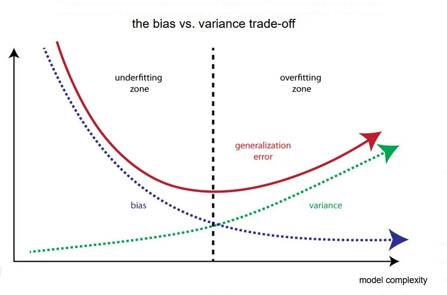

Bias and Variance Trade-Off
What bias and variance are, how they trade off, and the difference between a model that is consistent but inaccurate and one that is inconsistent but accurate.
Table of Content
Bias
Bias refers to the error introduced by approximating a real-world problem, which may be complex, by a simplified model. Bias in a machine learning model occurs when the predicted values are further from the actual values.
A model with high bias makes strong assumptions about the underlying data distribution and may oversimplify the relationships between features and the target variable. This can result in systematic errors, causing the model to consistently miss the true patterns in the data. In other words, a biased model is inaccurate and might underperform both on the training data and new, unseen data.
Low bias indicates a model where the prediction values are very close to the actual ones.
Underfitting: High bias can cause an algorithm to miss the relevant relations between features and target outputs.
Characteristics of a high-bias model:
- Oversimplified representation of data.
- Fails to capture underlying patterns.
- Consistently performs poorly on both training and test data.
Variance
Variance refers to the error due to the model's sensitivity to small fluctuations or noise in the training data. Variance refers to the amount the target model will change when trained with different training data.
A model with high variance captures noise or random fluctuations in the training data as meaningful patterns, leading to high performance on the training data but poor generalization to new data. High variance models tend to overfit the training data by fitting it too closely, resulting in a poor fit to unseen data.
For a good model, the variance should be minimized.
Overfitting: High variance can cause an algorithm to model the random noise in the training data rather than the intended outputs.
Characteristics of a high-variance model:
- Fits training data closely, including noise.
- Poor performance on new, unseen data.
- Prone to overfitting.
Bias-Variance Trade-Off

In summary, the main differences between bias and variance are:
- Bias: Bias relates to the error introduced due to oversimplification of the model. High bias results in consistently inaccurate predictions.
- Variance: Variance relates to the model's sensitivity to noise in the training data. High variance leads to inconsistent predictions that fit the training data closely but fail to generalize.
The goal in machine learning is to find a balance between bias and variance to create a model that can generalize well to new data. This balance is often referred to as the bias-variance trade-off. Models with an appropriate level of complexity and regularization techniques can strike this balance, leading to better overall performance on both training and test data.
The bias-variance trade-off comes into play because reducing bias often leads to an increase in variance, and vice versa. A model that is too simple (high bias) will not be able to capture the underlying patterns in the data, resulting in systematic errors. Conversely, a very complex model (low bias) might fit the training data closely but will also fit the noise, leading to poor generalization.
The goal is to strike a balance between bias and variance, to have the lowest generalization error, which results in the best overall predictive performance on new, unseen data. This can be achieved by:
- Selecting an appropriate model complexity: Choosing a model that is neither too simple (high bias) nor too complex (high variance) for the given problem.
- Using regularization techniques: Methods like L1 or L2 regularization can help control model complexity and reduce variance.
- Ensemble methods: Techniques like bagging and boosting combine multiple models to reduce variance and improve overall performance.
- Cross-validation: Evaluating the model's performance on multiple subsets of the data helps in understanding its behavior and finding the right trade-off.
Finding the right balance between bias and variance depends on the specific problem, dataset, and the model's characteristics. It's important to strike this balance to create a model that can generalize well and make accurate predictions on new data.
Consistent vs Accurate
Consistent but Inaccurate
A machine learning model that is consistent but inaccurate refers to a situation where the model's predictions are systematically wrong in terms of their overall accuracy, despite demonstrating a certain level of consistency or stability in its behavior. In other words, the model consistently makes predictions that are biased or far from the true values, even though it might consistently produce similar predictions across different instances or datasets.
Consistency in this context means that the model's predictions don't vary significantly when given different inputs or when trained on different subsets of data. However, this doesn't guarantee that the model's predictions are accurate or close to the ground truth.
High bias and low variance algorithms train models that are consistent, but inaccurate on average.
This situation can arise due to various reasons:
- Biased Data: If the training data used to train the model is biased or not representative of the real-world distribution, the model might learn to consistently make predictions that reflect those biases, leading to inaccurate predictions.
- Incorrect Assumptions: If the model's architecture or assumptions about the underlying relationships in the data are fundamentally flawed, the model might consistently produce inaccurate predictions.
- Limited Features: If the model is using a limited set of features that don't capture the complexity of the underlying data, it might consistently make inaccurate predictions due to the missing information.
- Overfitting to Noise: In some cases, a model might overfit to noise in the training data, which can lead to consistent but inaccurate predictions on new data.
- Underfitting: On the other hand, if the model is too simplistic or lacks the capacity to capture the true underlying patterns, it might also consistently produce inaccurate predictions.
It's important to address these issues in machine learning by improving the quality of training data, selecting appropriate features, refining the model architecture, and fine-tuning hyperparameters to strike a balance between bias and variance. Monitoring the model's performance on various metrics and using techniques like cross-validation can help detect and mitigate issues related to consistency and accuracy.
Incosistent but Accurate
the model's predictions might be close to the true values or ground truth, but its behavior is unstable and varies widely across different instances or datasets.
High variance and low bias algorithms train models that are accurate but inconsistent
Here's more detail about what this might entail:
- Inconsistency: The model's predictions vary significantly when given different inputs or when trained on different subsets of data. This inconsistency can lead to difficulties in trusting or relying on the model's predictions, as they can change drastically even for minor changes in input data.
- Overfitting: If the model is too complex and is capturing noise or outliers in the training data, it might exhibit inconsistent behavior when faced with new or slightly different data. This is often a sign of overfitting, where the model fits the training data too closely and struggles to generalize to unseen data.
- Small Sample Size: In some cases, when the available data is limited, a model might perform well on the available samples but exhibit inconsistency when faced with new data. This is because it hasn't learned the true underlying patterns and instead is fitting to the noise in the small training set.
- Data Drift: If the distribution of the input data changes over time (data drift), a model that was originally accurate might become inconsistent in its predictions when faced with new data distributions that it hasn't encountered during training.
Addressing these issues involves ensuring that the model's complexity is appropriate for the available data, and it's important to monitor its performance on various data subsets to detect any inconsistencies. Techniques like cross-validation, ensemble methods, and regularization can help mitigate overfitting and improve the model's generalization capability. Additionally, continually updating and retraining the model to account for data drift can help maintain its accuracy and consistency over time.